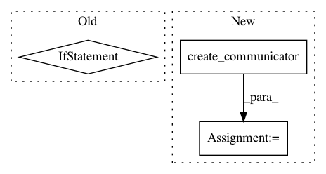

4fda6d1c940396029a054aa5157524912fc6afa2,examples/ssd/train_multi.py,,main,#,149
Before Change
devices = {"main": args.gpu[0]}
devices.update(
("other{:d}".format(i + 1), gpu) for i, gpu in enumerate(args.gpu[1:]))
updater = training.ParallelUpdater(train_iter, optimizer, devices=devices)
trainer = training.Trainer(updater, (120000, "iteration"), args.out)
trainer.extend(
After Change
parser.add_argument("--resume")
args = parser.parse_args()
comm = chainermn.create_communicator()
device = comm.intra_rank
if args.model == "ssd300":
model = SSD300(
n_fg_class=len(voc_bbox_label_names),
pretrained_model="imagenet")
elif args.model == "ssd512":
model = SSD512(
n_fg_class=len(voc_bbox_label_names),
pretrained_model="imagenet")
model.use_preset("evaluate")
train_chain = MultiboxTrainChain(model)
chainer.cuda.get_device_from_id(device).use()
model.to_gpu()
if comm.rank == 0:
train = TransformDataset(
ConcatenatedDataset(
VOCBboxDataset(year="2007", split="trainval"),
VOCBboxDataset(year="2012", split="trainval")
),
Transform(model.coder, model.insize, model.mean))
test = VOCBboxDataset(
year="2007", split="test",
use_difficult=True, return_difficult=True)
test_iter = chainer.iterators.SerialIterator(
test, args.test_batchsize, repeat=False, shuffle=False)
else:
train = None
train = chainermn.scatter_dataset(train, comm, shuffle=True)
train_iter = chainer.iterators.MultiprocessIterator(train, args.batchsize)
// initial lr is set to 1e-3 by ExponentialShift
optimizer = chainermn.create_multi_node_optimizer(
In pattern: SUPERPATTERN
Frequency: 3
Non-data size: 3
Instances
Project Name: chainer/chainercv
Commit Name: 4fda6d1c940396029a054aa5157524912fc6afa2
Time: 2018-04-10
Author: Hakuyume@users.noreply.github.com
File Name: examples/ssd/train_multi.py
Class Name:
Method Name: main
Project Name: chainer/chainercv
Commit Name: 416839d354e483d42d22cd223a2ede06fbd2ae35
Time: 2017-12-09
Author: shunta.saito@gmail.com
File Name: tests/links_tests/connection_tests/test_conv_2d_bn_activ.py
Class Name: TestConv2DBNActiv
Method Name: setUp
Project Name: chainer/chainercv
Commit Name: eec207d5743b8121ae9c10e94dbba22f436aa203
Time: 2017-12-09
Author: shunta.saito@gmail.com
File Name: tests/links_tests/connection_tests/test_conv_2d_bn_activ.py
Class Name: TestConv2DBNActiv
Method Name: setUp